ForceHost: an open-source toolchain for generating firmware embedding the authoring and rendering of audio and force-feedback haptics
Abstract
ForceHost is an opensource toolchain for generating firmware that hosts authoring and rendering of force-feedback and audio signals and that communicates through I2C with guest motor and sensor boards. With ForceHost, the stability of audio and haptic loops is no longer delegated to and dependent on operating systems and drivers, and devices remain discoverable beyond planned obsolescence. We modified Faust, a high-level language and compiler for real-time audio digital signal processing, to support haptics. Our toolchain compiles audio-haptic firmware applications with Faust and embeds web-based UIs exposing their parameters. We validate our toolchain by example applications and modifications of integrated development environments: script-based programming examples of haptic firmware applications with our haptic1D Faust library, visual programming by mapping input and output signals between audio and haptic devices in Webmapper, visual programming with physically-inspired mass-interaction models in Synth-a-Modeler Designer. We distribute the documentation and source code of ForceHost and all of its components and forks.
Author Keywords
Digital Musical Instrument, haptics, force-feedback, authoring, mapping, embedded computing
CCS Concepts
• Applied computing → Sound and music computing; • Human-centered computing → Haptic devices;
Introduction
Our sense of touch is vital to most daily activities we engage in, but is underused by most existing computing devices, including in the musical domain. There is still a huge potential to be explored from force-feedback haptic applications to unleash the creativity of people: for improving communication, as in information visualization, and expression, as in digital musical instrument design.
Though haptics is an active research field for many decades, its main outcomes are cost-effective vibrotactile feedback (as in mobile phones) or expensive force-feedback devices (as for surgical operation simulation). A decade ago, O’Malley and Gupta [1] listed the following future trends: greater accessibility to haptic devices in commercial applications, improved data visualization by use of haptic displays that enable increased channels of information conveyance to humans. Are we there yet?
Software frameworks for haptics offer comprehensive haptics and physics simulation capabilities, however they typically require expert engineering and software development skills. Schneider et al. conducted a survey with 16 hapticians (haptics designers) on the tools they use for haptic design [2]. More confirmed hapticians tend to favor C/C++ frameworks such as Chai3d [3] then H3D. These frameworks offer comprehensive haptics and physics simulation capabilities, however require expert engineering and software development skills. Seifi et al. formalized how novice hapticians design haptics. The authors suggest that between a project idea and project delivery, hapticians go through 4 phases not linearly, but with many loops, between: dealing with hardware, conceptual design, programming for multiple senses, user evaluation [4].
With ForceHost, we aim at facilitating the authoring of audio and force-feedback haptic interaction design for audio-hapticians, while offloading the complexity of real-time digital signal processing by embedding these capabilities directly in firmware for audio-haptic devices.
Related Work
While many related works explore creative solutions for authoring haptic feedback, as reviewed by [2] [5] [4]; in this work we focus on frameworks that couple force-feedback and sound synthesis. We review related work in two categories: physical modeling and signal modeling approaches. Through physical modeling, audio-hapticians author audio-haptic scenes by modeling the interactions between physical objects, and the output signals that drive the haptic display are derived from solving differential equations governed by the laws of physics. Through signal modeling, audio-hapticians define audio-haptic scenes by editing transfer functions, similar to the concept of waveshaping in audio signal processing.
Physical modeling frameworks
We review four physics-based audio-haptic frameworks chronologically. These frameworks were designed for physical modeling applications and describe well audio-haptic interactions that comply with Newton’s law of motion, such as plucking, bowing, and striking. Visual representations of physical behaviours allow for a possible serendipitous approach to the haptic exploration of complex physical systems. However, these frameworks are less suited for designing applications that do not relate to real physical interactions.
Cordis-Anima
CORDIS-ANIMA by Cadoz et al. [6] pioneered the use of mass-interaction modeling for multisensory simulation. With CORDIS-ANIMA, audio-hapticians design physical behaviours with scenes composed of interconnected masses, springs, non-linear links, and friction elements. The resulting simulation is displayed through haptic, audio and visual outputs, all rendered with the same physical model. Signal modelling features were introduced more recently [7].
Dimple
Dimple by Sinclair and Wanderley [8] is a haptics simulation server that combines the Chai3d haptics framework and ODE (Open Dynamics Engine) software library, controlled through an Open-Sound-Control (OSC) interface. With Dimple, audio-hapticians create, modify, and position virtual physical objects by sending OSC commands from musical applications such as MAX/MSP or PureData, thereby coupling the haptic scene with audio synthesis. A front-end application provides a visualization of the virtual physical environment, with real-time visual feedback on the 3D position of the input device. Haptic scenes can be modified at run-time, what makes Dimple suitable as both an authoring-tool and musical instrument.
Synth-A-Modeler
Synth-A-Modeler (SaM) Compiler [9] and Designer [10] together constitute an interactive development environment for designing force-feedback interactions with physical models. With SaM, audio-hapticians interconnect objects from various paradigms (mass-interaction, digital waveguides, modal resonators) in a visual programming canvas that resembles electronics schematics and mechanical diagrams, and compile applications generated with the FAUST digital signal processing (DSP) framework. SaM Designer does not support real-time visual rendering of models, and the possibilities of run-time modifications are limited to the tuning of object parameters.
MIPhysics
MIPhysics by Leonard and Villeneuve [11] is a Java physics engine running in Processing [12] for designing audio haptic interactions through 3D mass-interaction models. With MIPhysics, audio-hapticians script interactive simulations, rendered with audio, haptic and visual feedback. More recently, Leonard and Villeneuve developed a 1-DoF mass-interaction framework for Faust [13], aiming at designing larger physical models, but with no direct support for using haptic devices as input.
Signal modelling frameworks
We review two frameworks that aim at designing force-feedback haptics with a signal modeling approach. These two frameworks do not support audio synthesis but their features are inspired by audio tools.
Haptic Icon Prototyper
The Haptic Icon Prototyper by Swindells et al. [14] is a tool for prototyping haptic behaviors with a force-feedback knob as target display. With The Haptic Icon Prototyper, hapticians design haptics through 3 panels reminiscent of digital audio workstations: a waveform editor to manipulate curves between haptic and spatiotemporal parameters, a tile palette to browse a collection of haptic effects or presets, and a tile pane to combine and sequence tiles. The custom haptic knob required a custom Real-Time Platform Middleware (RTPM) infrastructure implemented in a real-time Linux PC communicating with via an I/O board.
Feelix
Feelix by Van Ooosterhout et al. [15] is an interactive graphical editor for the design of time or position-based effects for a 1-DoF rotary device. With Feelix, hapticians define haptic effects with a curve editor and concatenate effects in a timeline-like view. The editor can upload effects to the haptic device embedded in its Teensy microcontroller [16] that will host and run effects in standalone mode, however, in this mode, effect parameters can not be modified at run-time.
System
Our audio-haptic firmware targets the following benefits:
embed haptic and audio synthesis, to avoid latency variations from traditional approaches delegating processing to host computers with varying operating systems and drivers
host an interactive GUI that allows for editing synthesis parameters and displaying the state of the device at run-time, without installing pilot drivers as in traditional setups with peripherals bound to host computers
System architecture
Our firmware for hosting and rendering audio-haptic scenes for Digital Musical Instruments (DMIs) consists of: an audio-haptic engine running on the ESP32 executing applications written in the FAUST language, a UI combining a graphical transfer-function editor embedded in a Web UI and control parameters exposed through libmapper [17].
The system architecture of ForceHost is illustrated in Image 1.

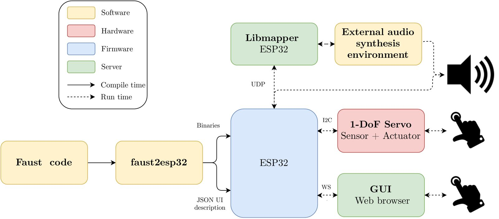
Architecture of ForceHost. The ESP32 board communicates via WebSockets with GUI, via the UDP with Libmapper devices and via a I2C bus with sensors and actuators
FAUST [18] (Functional AUdio STream) is a functional programming language for real-time DSP. Michon and colleagues added support of ESP32 embedded platforms in 2020 [19]. Our system builds upon their work by adding support for haptic rendering and a Web UI.
Graphical User Interface
FAUST implements user interface (UI) primitives for exposing internal application parameters in external user interfaces. UI primitives specified within the FAUST code create an entry for an external control input or output and provide abstract definitions of the corresponding UI widget, independent from the external GUI tool that implements the actual widget.
Overview of Faust UI primitives. Note: Display is a category label invented for the purpose of this paper only, and not officially in the FAUST documentation.
Category | Widget |
|---|---|
Discrete | buttons, checkbox |
Continous | hslider, vslider, nentry |
Organizational | vgroup, hgroup, tgroup |
Display | hbargraph, vbargraph |
A UI primitive can have an unlimited amount of metadata associated, specified as key-value pairs, and used to further specify the appearance, unit, or other custom behavior. The organizational UI primitives provide information on the hierarchical grouping of UI elements to an external GUI. An OSC-like namespace is generated from this hierarchy and used to associate a path with each element. I.e., a string where the character / is used as a hierarchical separator. This hierarchy is also reflected in the compiled C++ code, such that the structure of UI elements follows a top-bottom depth-first search on the grouping hierarchy. The discrete and continuous UI primitives are signal generators (inputs) within FAUST and are used to create pointers to control-rate data in the generated code and sharing them as entry points for GUI’s or sensor-interfaces. The FAUST compiler generates a buildinterface() function, which can be called on a UI object defined in another program to create a map between these pointers and its UI elements. The same compiler behavior applies for the display UI primitives, but within FAUST, these are both inputs and outputs, i.e., they take a signal and output it while making it available for the UI.
Web UI
We based our Graphical User Interface (GUI) on web technologies, specifically HTML5, CSS, and JavaScript, using NexusUI [20]. With its Web UI browseable remotely in a web browser, our solution avoid cross platform compatibility issues, and remains self-contained and portable. We use a server-client approach, where the application is self-contained within the haptic device. The haptic device hosts a server on a local network that any external mobile- or desktop-device on the same network and with a web browser installed can access as a client. Thus, our solution relies on the screen of an external device to render the GUI, but the application itself is embedded on the haptic device, and no installation is required on the external device. Our solution fits with the Internet of Musical Things (IoMusT) [21] and extends it with Haptics.
Websocket Server
We rely on a WebSocket server for the communication between the ESP32 host and external web browsers. We implemented a class, Esp32WebSocketUI for adding support for a websocket based UI on the ESP32 microcontroller. WebSockets enable full-duplex transactions, where the server can make GET/SET style requests to the client, which is not possible with HTTP. This allows for controlling GUI updates from the ESP32, which is preferred to ensure that the audio and haptic threads aren’t interrupted too often. Another benefit is the minimized overhead in transactions: client and server communicate over that same TCP connection throughout the lifecycle of a websocket, whereas new TCP connections are constantly created with standard HTTP.
Automatic generation and bundling of UI layouts
Faust supports abstract description of a user interface with widgets and primitives declared from within the Faust code [22]. This description is independent from any gui framework/toolkit. ForceHost uses a text-based specification of the UI in JavaScript Object Notation (JSON) format, with the hierarchy reflected in JSON’s layered key-value structure. With this structure, ForceHost automatically generates the layout of the GUI by recursively iterating through the JSON objects and dynamically adding children to the Document Object Model (DOM). We forked Faust Web UI [23], while a similar solution appeared in parallel: Faust UI Compositor [24]. Static web files are embedded on the ESP32 together with a JSON description of the UI during compilation Figure 3.5.2. These files are sent to the client via HTTP when initiating the connection, and the rest of the communication happens through websockets. An overview of this procedure is illustrated in Image 2.

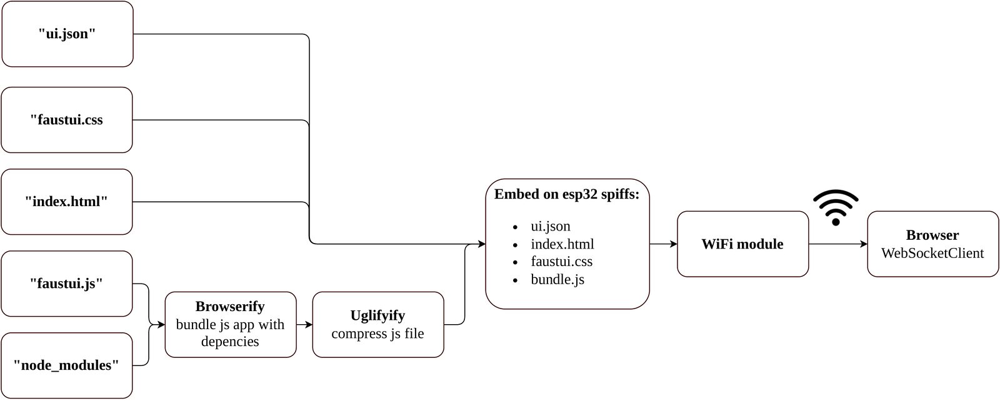
Toolchain for generating the Web UI
Mapping automated by Faust and exposed by libmapper through OSC
The FAUST UI system allows for a zero-configuration implementation where signals are automatically added and named according to the GUI’s OSC namespace. We also expose UI parameters through OSC with class Esp32LibmapperUI using the libmapper library [17].
Transfer function editor
We implemented a transfer function editor enabling the authoring of haptic effects at run-time. This editor consists of a parametric model of a piecewise function implemented in FAUST and a GUI implemented in JavaScript for editing the parameters. The transfer function’s output is calculated at audio-rate inside the FAUST application, and the transfer function itself is updated at a slower rate of the designer’s interaction with the GUI. The parametric model is obtained via control points, acting as breakpoints on a piecewise function. Each point controls a line segment, and the transfer function results from concatenating each segment.
Interpolation mechanism
We implemented an interpolation mechanism that allows for curved transitions between control points, inspired by the SuperCollider UGen linCurve [25] - a tool mapping a linear input range to a curve-like exponential output range.
Given two points ,x2) and ,y2) the exponentially interpolated curve is defined as:
where
where is a parameter in the range: that defines the curvature of the interpolation between and . For the growth is logarithmic, and for the growth is exponential. As the growth approaches linear, a limit case is implemented to reduce overhead by allowing for not evaluating the exponential function unnecessarily in this case. Additionally, an event-listener in the GUI evaluates only when it is changed by the user, to avoid unnecessary loading of the audio loop on the ESP32. Image 3 shows the power interpolation between points and for a linear sweep of . Notice how the resulting curves are symmetrical around the line, meaning that the effect of on the curve’s steepness is equal in both the logarithmic and exponential range.

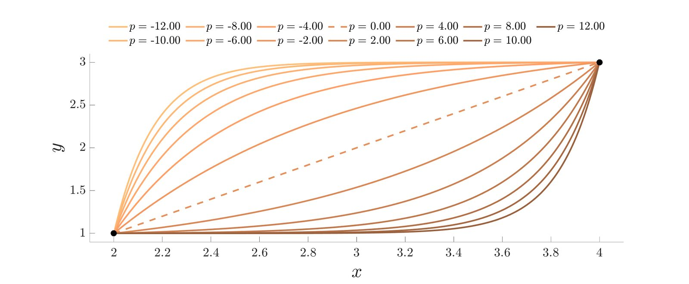
Exponential interpolation for different values of p
FAUST backend
The backend of the editor is a signal generator implemented in FAUST that implements the breakpoint function consisting of N concatenated segments:
The editor accesses the DSP engine at run-time via the entry points defined with UI elements. For each control point in the editor, the FAUST backend implements a hierarchical group with three hsliders for the coordinates, and the parameter.
Graphical editor
Our graphical editor is implemented on top of NexusUI, an open-source lightweight JavaScript toolkit with UI widgets and helper methods for creating web audio-based musical instruments in the browser [20]. We implemented two modes for the editor, Control Points, and Canvas, using the same breakpoint function described in Interpolation mechanism section. In both modes, the current input/output is visualized as a black circle on the transfer-function, allowing for visual feedback on the state of the haptic device connected to it. A summary of possible interactions with the two editor modes is given in Image 2.
Control Points
The transfer-function is defined as the interpolation between control-points that can be dynamically added/deleted from the breakpoint function, and moved in the x,y plane. Additionally the curvature parameter can be changed relatively, by dragging on a line segment.

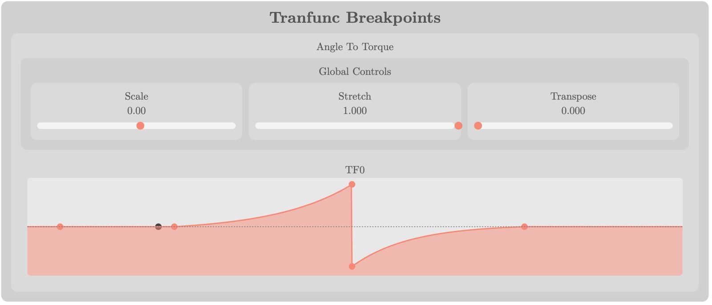
Transfer function editor: Breakpoint mode. Screenshot of editor embedded in the web UI and running in Chrome. The black circle visualizes the current input/output of the transfer function.
Canvas
The transfer-function is defined by freehand drawing of the transfer-function. Here 512 control points are equally distributed along the x-axis, and only the y-value can be changed.

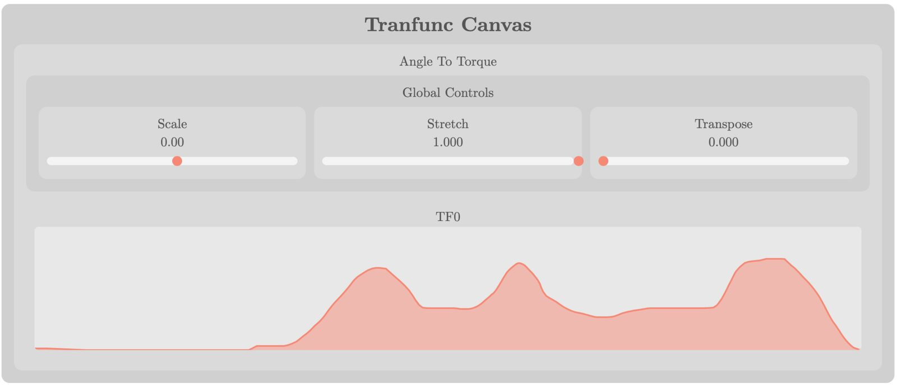
Transfer function editor Canvas mode. Screenshot of the editor embedded in the web UI and running in Chrome.
User interactions for the 2 transfer function editor modes. Note: Drag is the series of consecutive actions: click, hold, move, release.
Action | Target | BreakPoint Mode | Canvas Mode |
|---|---|---|---|
Double-click | Anywhere | Add a new control point | - |
Single click | Control point | Remove | - |
Drag | Control point | Move (absolute) | - |
Drag | Line Segment | Edit curvature (relative) | Free hand draw |
Audio-Haptic DSP engine
Our DSP engine handles the rendering of audio and haptics on the ESP32. Our work builds upon faust2esp [19], an engine for rendering audio and transmitting it to an onboard audio codec via C and coupled with the FAUST compiler. Faust executes audio-rate signals at the sample-rate , and signals generated by UI elements at control-rate . The architecture that hosts the FAUST program specifies and buffer size at run time, and is determined by the ratio:
Since the control loop of one of the guest motor boards that we tested (Mechaduino) could not exceed 6 kHz while maintaining C communication, we implemented haptic signals as control signals, introducing the following benefits:
Applications can be debugged using UI elements instead of a haptic device: input position is simulated as a slider and output force as a bar graph.
Routing UI elements within FAUST is simpler than routing audio signals
The large collection of FAUST examples can be used out-of-the-box with haptics as UI.
We implemented a haptic controller to update UI elements and maintain the I2C communication with guest motor boards. An illustration of the system’s different tasks is given in Image 6.
Task synchronization
The overall rendering procedure, from sampling the encoder to outputting a force, involves multiple processes spread across different CPU’s with different timing requirements: motor and sensor control on guest boards; and haptic controller, DSP engine and UI on host boards. A core challenge in designing haptic rendering systems is exactly the synchronization of such processes, and the strategies undertaken can have a great effect on the stability and/or resolution of the system [26].

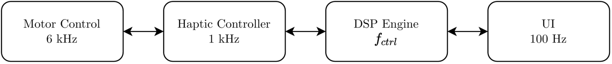
Overview of the system’s multiple tasks running at different rates
We implemented a flexible timing scheme in our system, where different synchronization configurations can be toggled with compiler flags. For example, the configuration system supports both single and dual core operation for the ESP32 platform. The configurations are presented in Image 3.
Synchronization configurations
Asynchronous | Motor control loop on own interrupt |
Synchronous | Motor control loop synchronized to haptic task |
Parallel | Audio & haptics in parallel tasks |
Sequential | Audio & haptics in same task |
Tools for audio-haptic authoring
We designed the tool such that a virtual environment can be specified entirely from within the FAUST language, and compiled and uploaded to the ESP32 automatically. Additionally, we implemented a low level Faust library, haptic1D.lib, to facilitate the process of users who need only be concerned with application-specific code.
haptic1D: a low level library for haptics
The library contains helper functions: I/O Drivers for fetching and transmitting haptic parameters and to/from the haptic device, Signal conditioning - for easing the integration of haptic parameters in the context of normalized audio, and Haptic FX with basic modular effects to kickstart and inspire the haptic authoring process. The API is summarized in Image 4 See below for an overview of the API.
API for a low level haptic toolkit in Faust
Type | Name | Behavior |
|---|---|---|
Input driver | getPos(id) | Receive position from a haptic device |
Input driver | getVel(id) | Receive velocity from a haptic device |
Input driver | getAcc(id) | Receive acceleration from a haptic device |
Output driver | setForce(id) | Send force command to a haptic device |
Output driver | setVel(id) | Set the velocity with a PID controller |
Haptic Fx | wall(pos) | A haptic wall optimized for maximal stiffness |
Haptic Fx | msd(mass, stiffness, damping) | A mass spring damper system |
Haptic Fx | pid(kp,ki,kd,target) | A PID controller to user for velocity, position etc. |
Haptic Fx | buzz(env, freq, trig) | A haptic vibration signal with controllable envelope |
Haptic Fx | tranFunc(id,xMin,xMax,nPoints) | A Transfer Function editor with control points |
Signal Cond. | wrap(offset, range) | wraps a signal at given range. |
Signal Cond. | unWrap(offset, range) | unwraps a signal at given range |
Signal Cond. | Clip(in, lim) | Clips input at lim |
Signal Cond. | linMap(x,xMin,xMax,yMin,yMax) | Linear mapping of a signal to a new range |
Toolchain for compilation and flashing
Compiling firmware for embedded platforms used to be associated with a long and tedious process that requires expert programming skills. We implemented a script that automates the process: FAUST code C++ ESP-IDF project binaries uploaded to the ESP32, relying on python tool idf.py, and the faust2esp32 script by [19] that takes care of translating from FAUST code to C++ for ESP-IDF. We combined both tools, adding support for fetching and embedding the GUI text files, and for optimizing compilation time. Image 7 shows an exhaustive overview of the automated process.

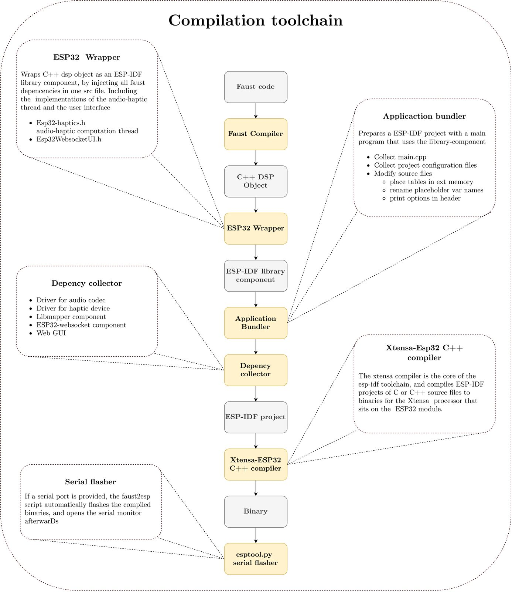
Compile chain from faust code to binaries flashed to the ESP32
Validation
We validate our ForceHost firmware by overviewing a variety of compatible hardware integrations, by walking through the firmware code of exemplar applications, and by describing its integration into development environments for visual programming.
Hardware integrations
We have paired ForceHost so far with 2 guest motor board: the Mechaduino (Arduino-based, for stepper motors) as in the TorqueTuner module [27] and the Mjbots Moteus (STM32 microprocessor, for Brushless Direct Current (BLDC) motors). The main modification required on guest boards’ own firmware is to implement I2C communication to send force data and receive position control.
We have flashed ForceHost on the following ESP32 hosts boards: Espressif TinyPico and SparkFun Thing Plus ESP32 (without audio), and Espressif LyraT (with audio). The only modifications required for supporting more host boards are: I2C pinout definition, plus software driver implementation for codec for audio support when needed.
Firmware examples
Similarly to audio-haptic demos [28] and exercises [29] for the Plank by Verplank et al. [30], we describe 4 examples of script-based programming of haptic firmware applications with our haptic1D Faust library, with increasing complexity, and whose code is available in Appendices 7.1.
Examples share the following steps:
Import Faust and haptic1D libraries.
Initialize haptic device drivers.
Setup transfer function editor (except Turntable [sec:app:turntable]) in control points mode.
Define audio synthesis models and their parameters.
Define haptic outputs.
Attach all components in a joint process.
These examples in a few lines of code show how concise ForceHost firmware applications are, similarly to JavaScript code, while bringing real-time audio processing and optimization capabilities from C++ code.
Pitch Wheel
We designed an application reminiscent of the pitch wheel common in many keyboard synthesizers. We implemented a virtual spring using the msd function of the haptic1D library and used three instances of the transfer function editor for editing mass, stiffness, and damping graphically for exploring non-linear mappings in run-time. The angle controls the frequency of a series of modulators to an FM synthesizer. There is a natural idle state when =θspring, where the virtual spring is in equilibrium (neither compressed nor stretched). The force increases as is pushed away from , providing continuous feedback on the modulator frequency. This allowed for accurate tuning of the timbre, reminiscent of the theremin & elastic band experiment in [31]. Dependent on the settings for mass, damping, and stiffness the spring could return to idle like a traditional pitch wheel, or start oscillating at different frequencies.

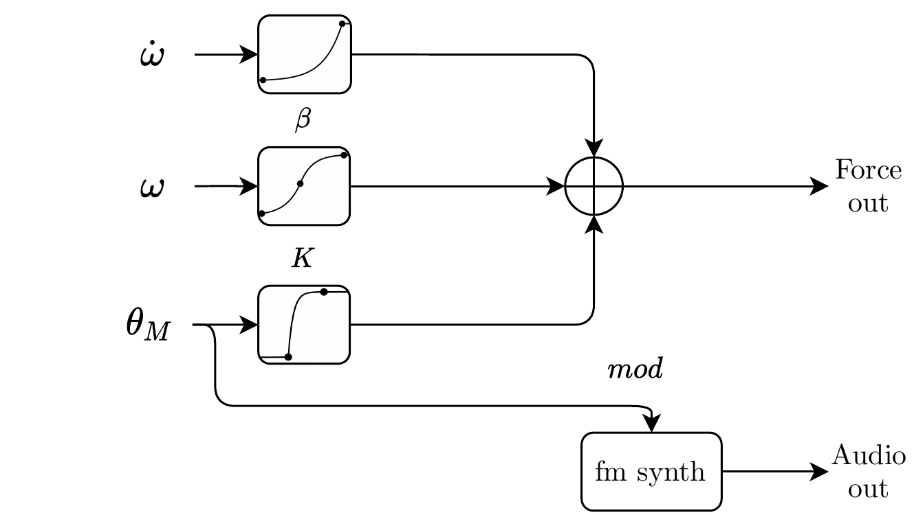
Block Diagram for Pitch Wheel: a physical control common in hardware synthesizers or MIDI controllers, here rendered using a physical model, with editable transfer function.
String Plucker
We designed a string plucker application with force-feedback on arbitrary excitation waveforms. We used the transfer function editor to define an angle vs. force relation that simulates the interaction with a virtual string. The force is sent to the haptic device, and the differentiated force is routed as excitation to a physical model of a nylon-string guitar. The force also modulates guitar model’s string-length to simulate tension building up before the string is released. This results in detent-like haptic effects serving as feedback on virtual string plucking. By increasing the stretch parameter, that defines the input gain to the transfer-function, detents can be compressed enough to achieve a bowing-like behavior with both sound and force feedback behaving like sustained stick-slip excitation.

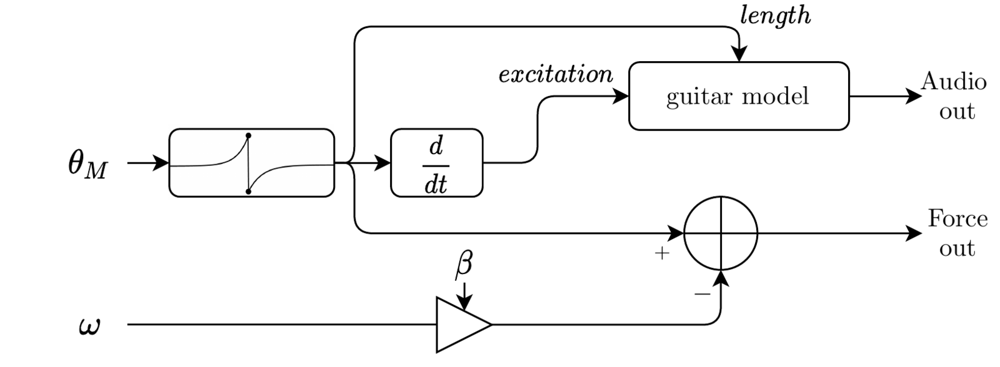
Block Diagram for String Plucker: a guitar string model plucked by rotary haptics.
Turntable
We replicated D’Groove [32], a force feedback turntable for supporting physical manipulation of digital audio, and added a velocity-following feature.
A DC value, is commanded to a PID controller, while controls the playback speed of a real-time audio looper. Playback can be stopped by stalling the motor and scratching can be performed by twisting it back and forth. The controller tries to maintain the at all times, and therefore a torque is displayed when the user slows or stalls the motor. To implement a velocity follower feature, is smoothed through a lag filter and used instead a . The system attempts to maintain the last stable velocity, effectively implementing a turntable that keeps spinning in the velocity one releases it in.

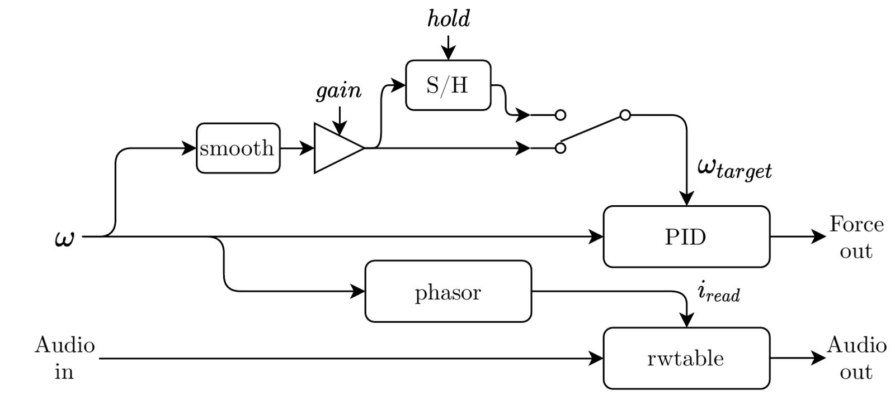
Block Diagram for Turntable: an audio looper with velocity follower bound to haptic rotation.
Auto Tremolo Filter
This example uses our transfer-function editor to draw envelopes for a vibrotactile sensation, for producing vibrotactile pops similarly to Macaron [33], but adding the integration with an audio effect. Audio input is routed through a virtual analog Moog ladder filter to the output. An envelope defined in the transfer-function editor is triggered by a pulse generator and controls both the cutoff of the filter and the amplitude of a periodic waveform sent to the haptic device. The angle input from the device controls the rate of the pulses, creating a tremolo-like behavior. Thus, the auto-filter’s envelope can be felt through the haptic interface, serving both as a silent preview of the effect settings as an alternative to "tap-tempo".

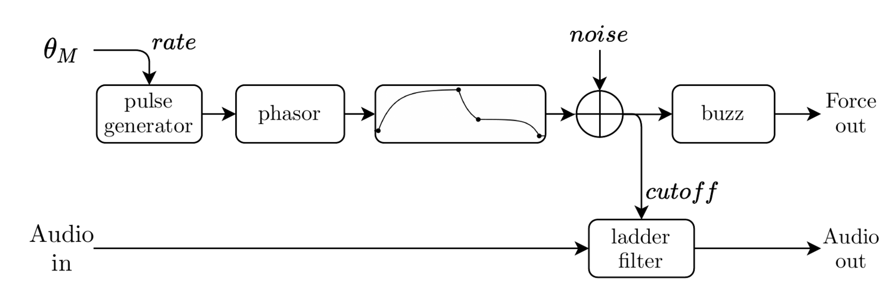
Block Diagram for Auto Tremolo Filter: a digital model of Moog Voltage-Controlled Filter rendering sound vibration through haptic buzz.
Integrated development environments
We integrated ForceHost as target or node in two visual programming environments:
Synth-a-Modeler Designer for sketching physically-inspired mass-interaction models,
Webmapper for mapping input and output signals between audio and haptic devices.
Synth-A-Modeler Designer
We implemented support of ForceHost as target in the Synth-A-Modeler Compiler and Designer [10].

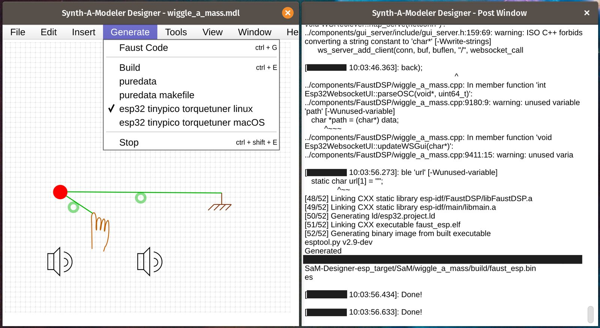
Modeling mass-interaction physical models (left) and generating a ForceHost firmware in Synth-A-Modeler Designer.
The workflow for authoring embedded audio-haptic simulations of physically-inspired mass-interactions becomes simplified as follows: First we sketch physical models in the Synth-A-Modeler Designer canvas. Then we generate Faust code using the Synth-A-Modeler Compiler based on Faust, to which we added ForceHost as target. The resulting application directly runs the audio-haptic physical model on the host ESP32 board.
Webmapper
ForceHost firmware applications embed libmapper and host boards are thus automatically discoverable in webmapper [34].
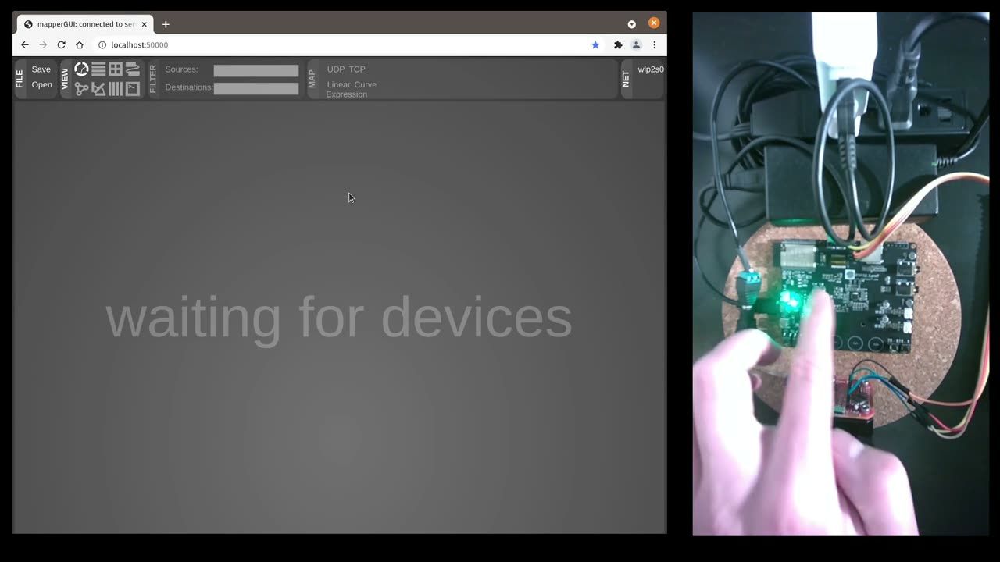
▶Discovering a ForceHost device and embedded transfer function editor in webmapper (left) while browsing the transfer function cursor with the device (right).
We modified webmapper to embed the display of the ForceHost Web UI directly in its view, for real time visual feedback on the state of actuators and sensors, with controls bound as libmapper signals.
Discussion
Our transfer function editor offers a graphical design approach that allows non-programmers to prototype audio and haptic force-feedback applications. Although we presented four musical applications to validate our toolchain, it has not been thoroughly tested with different people. ForceHost could benefit from an extensive user evaluation with 1) DMI designers prototyping new force feedback instruments and 2) musicians who operate such instruments.
Based on our own experience with developing examples that employ the transfer-function editor, we suggest the following improvements:
Curve modes: The curvature parameter of the editor is a 1D parameter that allows for changing the exponent of a fixed curve by dragging on a line along the y-axis. This 1D control gives a somewhat limited design space, and more arbitrary shapes could be achieved by introducing another dimension to curvature control. An interesting avenue could be bezier curves as in Feelix [15].
Symmetry: It is challenging to author symmetrical shapes in the current implementation since line segments can only be changed individually. A way to allow for symmetrical shapes could be with mechanisms for editing multiple points simultaneously.
Expressions: The possibility of defining transfer-functions as mathematical expressions could potentially accelerate the prototyping process by allowing for replicating and visualizing results from related literature. A possible implementation is to extend the integration with libmapper [17] to use its expression editor.
Hysteresis & state dependencies: Many excitation mechanisms with real physical instruments, such as guitar string and piano hammers, exhibit hysteresis. An interesting next step would be to generalize this concept and devise a system for defining state dependencies.
Fitted Canvas: As a medium between tuning control points and drawing in freehand, it could be interesting to implement a fitting mechanism for the canvas mode, to produce smooth curves.
Possible avenues for future work include:
extending the 1D haptics library beyond rotary guest boards, starting with the FireFader [35] for linear haptics;
exploring how to support multiple degrees of freedom (DoFs), to replicate existing grounded force feedback mechanisms [36];
redefining authoring to combine swarms of degrees of freedom, towards recomposable modular UIs like the Ergos TGR [37].
Conclusion
We presented ForceHost: an opensource firmware that hosts authoring and rendering of force-feedback and audio signals and that communicates though I2C with guest motor and sensor boards. We modified Faust, a high-level language and compiler for real-time audio digital signal processing, to support haptics. Our toolchain compiles audio-haptic firmware applications with Faust and embeds web-based UIs exposing their parameters. We validated our firmware by example applications and modifications of integrated development environments: script-based programming examples of haptic firmware applications with our haptic1D Faust library, visual programming by mapping input and output signals between audio and haptic devices in Webmapper, visual programming with physically-inspired mass-interaction models in Synth-a-Modeler Designer.
We distribute the documentation and source code of ForceHost and all of its components and forks (Table 5).
Distribution of documentation and source code for ForceHost and components and forks through git repositories.
Components | Repository |
|---|---|
ForceHost (Documentation) | |
Faust (Toolchain) | |
Mechaduino Firmware | |
Synth-A-Modeler Compiler | |
Synth-A-Modeler Designer | |
Webmapper |
Ethics Statement
Our research addresses matters of accessibility, inclusion and sustainability by fostering interaction through multiple modalities including haptics which provide people with alternatives to audiovisual displays, and by (re)using open-source and open-hardware components. Our research did not involve human participants, and we believe it is safer this way during a pandemic.
Appendices
ForceHost firmware examples
Pitch Wheel
import("stdfaust.lib");
ha = library("haptic1D.lib");
// Haptic device drivers
angle = ha.getPosRaw(0);
vel = ha.getVelRaw(0);
force = ha.setForce(0);
// Transfer function parameters
xMin = 0; xMax = 360; yMin =-1; yMax = 1; nPoints = 3; bipolar = 1; springPos = 180;
impGroup(x) = hgroup("Virtual Impedance",x);
stiffness = abs(angle - springPos): impGroup(vgroup("Stiffness",ha.TranFunc_nPoint(0,xMin,xMax-springPos,yMin,yMax,nPoints,bipolar) * hslider(" ",0,0,100,0.01)));
damping = abs(vel) : impGroup(vgroup("v:Damping",ha.TranFunc_nPoint(1,xMin,xMax,yMin,yMax,nPoints,bipolar)* hslider(" ",0,-2,2,0.01)));
mass_kg = abs(acc) : impGroup(vgroup("v:Mass",ha.TranFunc_nPoint(2,xMin,xMax,yMin,yMax,nPoints,bipolar) * hslider(" ",0,0,10,0.01)));
// Fm parameters
modIdx1 = angle; modIdx2 = modIdx1 * 5;
carrier = hslider("v:FM synth/Carrier freq",100,50,300,1);
mod1 = hslider("v:FM synth/Mod1 freq",110,50,300,1); mod2 = hslider("v:FM synth/Mod2 freq",1000,800,1200,1);
acc = vel: ha.calcAcc(1)/1000 : hbargraph("Accceleration",-1,1);
fmSynth = sy.fm((carrier,mod1*modIdx1,mod2*modIdx1),(modIdx1,modIdx2));
process = ha.msd(springPos,stiffness,damping,mass_kg,angle,vel) <: attach(fmSynth*(vel/360), force);
- -
String Plucker
import("stdfaust.lib");
ha = library("haptic1D.lib");
// Layout
group(x) = hgroup(" ",x);
// Haptic device drivers
force = ha.setForce(0);
vel = ha.getVelRaw(0);
pos = ha.getPosRaw(0): ha.unwrap(360) : si.smoo : ha.wrap(0,360) / 360;
gain = hslider("Gain",1,0,1,0.01);
// Transfer function editor
tfgroup(x) = group(vgroup("String Tension",x));
dampingParam = tfgroup(hslider("Damping",0,-2,2,0.01));
scale = tfgroup(hslider("h:Global Controls/Scale",0,0,ha.maxTorque,0.01));
stretch = tfgroup(hslider("h:Global Controls/Stretch",1,1,1000,0.1));
transpose = tfgroup(hslider("h:Global Controls/Transpose",0,0,1,0.001));
tf = tfgroup(ha.TranFunc_nPoint(0,0,1,-1,1,6,1));
// Guitar model
pluckPos = group(hslider("v:String/pluckPos",0,0,1,0.001));
excitation = ((pos+transpose)*stretch) : ha.wrap(0,1) : tf;
length = group(hslider("v:String/length",1,0,3,0.001));
// Haptic outputs
damping = ha.damper(dampingParam,vel);
// forceOut = (*(scale)*(-1)*ha.sgn(vel) - damping) : force;
forceOut = *(scale)*(-1) : + (damping) : force;
process = attach(pm.nylonGuitarModel((1+abs(excitation))*length,pluckPos,excitation/stretch)*gain,excitation : forceOut);
- -
Turntable
ha = library("haptic1D.lib");
import("stdfaust.lib");
// Haptic device drivers
angle = ha.getPos(0);
vel = ha.getVelRaw(0);
force = ha.setForce(0);
// Layout
settingsGroup(x) = hgroup("[0]",x);
hapticGroup(x) = settingsGroup(hgroup("[0]Haptics",x));
// Velocity follower
sel = hapticGroup(1 - checkbox("v:Velocity Follower/Fix Velocity"));
fixedVelocity = hapticGroup(hslider("v:Velocity Follower/Target Velocity",0,-500,500,1));
up = hapticGroup(hslider("v:Velocity Follower/up",0.07,0,2,0.001));
down = hapticGroup(hslider("v:Velocity Follower/down",0.25,0,2,0.001));
att = hapticGroup(hslider("v:PID/Feedback Gain",1.03,0,1.1,0.001));
kp = hapticGroup(hslider("v:PID/kp",1.29,0,2,0.001));
kd = hapticGroup(hslider("v:PID/kd",0.04,0,1,0.001));
dynamicVelocity = abs(vel):abs(si.lag_ud(up,down))*ha.sgn(vel)*att;
targetVelocity = select2(sel,fixedVelocity,dynamicVelocity);
// Audio looper
looperGroup(x) = settingsGroup(vgroup("[1]Looper",x));
record = looperGroup(checkbox("[1]Record") : int);
wet = looperGroup(hslider("wet",1,0,1,0.01));
inGain = looperGroup(hslider("inGain",1,0,10,0.1));
tableSize = 32000 * 4;
recIndex = (+(1) : %(tableSize)) ~ *(record);
readIndex = vel/150/float(ma.SR) : (+ : ma.decimal) ~ _ : *(float(tableSize)) : int;
looper = _ <:( *(inGain) : rwtable(tableSize,0.0,recIndex,_,readIndex))*wet,_*(wet-1) :> _;
process = (_,_,(vel : ha.PID(kp,0,kd,targetVelocity) *(-1))) : (looper,attach(looper*5,force)); - -
Auto Tremolo Filter
// A haptic filter application
// mono -> stereo
import("stdfaust.lib");
ha = library("haptic1D.lib");
// Haptic device drivers
angle = ha.getPosRaw(0) : ha.unwrap(360) / 360;
vel = ha.getVel(0);
force = ha.setForce(0);
// Interface
group1(x) = hgroup(" [1]",x);
envelopeGroup(x) = group1(vgroup("Envelope[0]",x));
filterGroup(x) = group1(vgroup("Filter[2]",x));
hapticGroup(x) = group1(vgroup("Haptics[1]",x));
masterGroup(x) = group1(hgroup("Master[3]",x));
// Haptics
maxForce = hapticGroup(hslider("Vibration Strength",0,0,150,1));
vibFreq = hapticGroup(hslider("Vibration Freq",130,0,300,0.01));
// Filter params
q = filterGroup(hslider("Q",0.1,0.1,1,0.0001));
freqRange = filterGroup(hslider("Freq",1000,100,10000,1));
width = filterGroup(hslider("Width",0,0,0.5,0.00001));
// Envelope params
envLength = 5000;
vibAttack = envelopeGroup(hslider("Attack",0.01,0,1,0.001));
vibRelease = envelopeGroup(hslider("Release",0.01,0,1,0.001));
tf = envelopeGroup(ha.TranFunc_nPoint(0,0,envLength*1.1,0,1,5,0));
modAmt = envelopeGroup(hslider("Modulation Amount",0,0,1,0.0001));
// Audio params
pitchModLength = 32000;
gain = masterGroup(hslider("v:Volume/Gain[style:knob]",0.5,0,1,0.001));
wet = masterGroup(hslider("v:Volume/Wet[style:knob]",1,0,1,0.0001));
bypass = masterGroup(checkbox("v:Route/Bypass[0]"));
external = masterGroup(checkbox("v:Route/internal/externalsource[1]"));
externalMix = masterGroup(hslider("v:Route/h:Mixer/External[1]",0,0,1,0.001));
internalMix = masterGroup(hslider("v:Route/h:Mixer/Oscillator[2]",0,0,1,0.001));
pitchOffset = masterGroup(vslider("h:Oscillator/Frequency[style:knob]",20,0,500,0.1));
pitchMod = masterGroup(vslider("h:Oscillator/Modulation[style:knob]",0,-3,3,0.001));
pitchModEnv = masterGroup(ha.TranFunc_nPoint(1,0,pitchModLength*1.1,0,1,4,0));
pitchModRate = masterGroup(vslider("h:Oscillator/LFO Rate [style:knob]",0,0,pitchModLength,1));
// Trigger and envelope chains
buzz = ha.buzz_custom(vibFreq,env)*maxForce;
buzzPhasor = ba.countup(envLength,_);
env = trig : buzzPhasor: tf + mod(20);
fEnv = env *freqRange : si.smoo;
trig = angle : si.smoo : *(1000) : ba.beat;
// Noise modulation chain
mod(freq) = no.lfnoise0(freq) * modAmt;
ramp(N) = 10 : (+ : wrap) ~ _
with{
wrap(x) = x % N;
};
vcf(freq,in) = q,freq+0.1, in : wet*ve.moog_vcf_2bn + (1-wet)*in;
// Stereo phaser chain
phaser(in) = in-shiftedL,in+shiftedR
with{
shiftedL = in : de.sdelay(1000,1024,ramp(1000)+no.lfnoise0(10)*100) * width;
shiftedR = in : de.sdelay(1000,1024,ramp(1000)+no.lfnoise0(10)*100) * width;
};
// Mix
pitchPhasor = _~((+(pitchModRate)) % envLength);
pitch = pitchPhasor : pitchModEnv : + (pitchOffset);
oscillator = os.sawtooth(pitchOffset*(1+(env*pitchMod : si.smoo)));
audioFx(audio) = fEnv,audio : vcf;
audioIn = (_*(externalMix),oscillator*(internalMix)*0.5) : +;
posIn = _;
process = audioIn <: (audioFx,_) : select2(bypass) : *(gain) <: attach(_,buzz:force) : phaser;- -
Citations
- ↩O’Malley, M. K., & Gupta, A. (2008). Haptic interfaces. In HCI beyond the GUI: Design for haptic, speech, olfactory and other nontraditional interfaces. Elsevier/Morgan Kaufmann.
- ↩Schneider, O., MacLean, K., Swindells, C., & Booth, K. (2017). Haptic experience design: What hapticians do and where they need help. International Journal of Human-Computer Studies, 107, 5-. https://doi.org/10.1016/j.ijhcs.2017.04.004
- ↩Conti, F., Barbagli, F., Balaniuk, R., Halg, M., Lu, C., Morris, D., Sentis, L., Warren, J., Khatib, O., & Salisbury, K. (2003). The CHAI libraries. In Proceedings of eurohaptics.
- ↩Seifi, H., Chun, M., Gallacher, C., Schneider, O. S., & MacLean, K. E. (2020). How do novice hapticians design? A case study in creating haptic learning environments. IEEE Transactions on Haptics, 1-. https://doi.org/10.1109/TOH.2020.2968903
- ↩Schneider, O., MacLean, K., Swindells, C., & Booth, K. (2017). Haptic experience design: What hapticians do and where they need help. International Journal of Human-Computer Studies, 107, 5-. https://doi.org/10.1016/j.ijhcs.2017.04.004
- ↩Covaci, A., Zou, L., Tal, I., Muntean, G.-M., & Ghinea, G. (2018). Is multimedia multisensorial? - a review of mulsemedia systems. ACM Comput. Surv., 51. https://doi.org/10.1145/3233774
- ↩Seifi, H., Chun, M., Gallacher, C., Schneider, O. S., & MacLean, K. E. (2020). How do novice hapticians design? A case study in creating haptic learning environments. IEEE Transactions on Haptics, 1-. https://doi.org/10.1109/TOH.2020.2968903
- ↩Cadoz, C., Luciani, A., & Florens, J. L. (1993). CORDIS-ANIMA: A modeling and simulation system for sound and image synthesis: The general formalism. Computer Music Journal, 17, 19-. https://doi.org/10.2307/3680567
- ↩Villeneuve, J., Cadoz, C., & Castagné, N. (2015). Visual representation in GENESIS as a tool for physical modeling, sound synthesis and musical composition. In Proceedings of the new interfaces for musical expression. Zenodo. https://doi.org/10.5281/zenodo.1179190
- ↩Sinclair, S., & Wanderley, M. M. (2009). A run-time programmable simulator to enable multi-modal interaction with rigid-body systems. Interacting with Computers, 21, 54-. https://doi.org/10.1016/j.intcom.2008.10.012
- ↩Berdahl, E., & Smith III, J. O. (2012). An introduction to the synth-a-modeler compiler: Modular and open-source sound synthesis using physical models. In Proceedings of the linux audio conference. Center for Computer Research in Music; Acoustics (CCRMA), Stanford University.
- ↩Berdahl, E., Vasil, P., & Pfalz, A. (2016). Automatic visualization and graphical editing of virtual modeling networks for the open-source synth-a-modeler compiler. In Haptics: Perception, devices, control, and applications. Springer International Publishing. https://doi.org/10.1007/978-3-319-42324-1_48
- ↩Leonard, J., & Villeneuve, J. (2019). Fast audio-haptic prototyping with mass-interaction physics. In International workshop on haptic and audio interaction design - HAID2019.
- ↩Processing. (n.d.). https://processing.org
- ↩Leonard, J., Villeneuve, J., Michon, R., Orlarey, Y., Letz, S., Three, A., & Four, A. (2019). Formalizing mass-interaction physical modeling in faust. In Proceedings of the 17th linux audio conference (LAC-19).
- ↩Swindells, C., Maksakov, E., MacLean, K. E., & Chung, V. (2006). The role of prototyping tools for haptic behavior design. In 2006 14th symposium on haptic interfaces for virtual environment and teleoperator systems. https://doi.org/10.1109/HAPTIC.2006.1627084
- ↩Van Oosterhout, A., Bruns, M., & Hoggan, E. (2020). Facilitating flexible force feedback design with feelix. In Proceedings of the 2020 international conference on multimodal interaction. Association for Computing Machinery. https://doi.org/10.1145/3382507.3418819
- ↩Teensy USB development board. (n.d.). https://www.pjrc.com/teensy/
- ↩Malloch, J., Sinclair, S., & Wanderley, M. M. (2013). Libmapper: (A library for connecting things). In CHI ’13 extended abstracts on human factors in computing systems. Association for Computing Machinery. https://doi.org/10.1145/2468356.2479617
- ↩Orlarey, Y., Fober, D., & Letz, S. (2009). FAUST : An efficient functional approach to DSP programming. In New computation paradigms for computer music.
- ↩Michon, R., Overholt, D., Letz, S., Orlarey, Y., Fober, D., & Dumitrascu, C. (2020). A faust architecture for the ESP32 microcontroller. In Proceedings of the in proceedings of the 17th sound and music computing conference.
- ↩NexusUI. (n.d.). https://github.com/nexus-js/ui/
- ↩Turchet, L., Fischione, C., Essl, G., Keller, D., & Barthet, M. (2018). Internet of musical things: Vision and challenges. IEEE Access, 6, 61994-. https://doi.org/10.1109/ACCESS.2018.2872625
- ↩Faust user interface primitives and configuration. (n.d.). https://faustdoc.grame.fr/manual/syntax/#user-interface-primitives-and-configuration
- ↩Faust web UI. (2017). https://github.com/rmichon/faustwebui
- ↩Faust UI compositor. (n.d.). https://github.com/Fr0stbyteR/faust-ui
- ↩Malloch, J., Sinclair, S., & Wanderley, M. M. (2013). Libmapper: (A library for connecting things). In CHI ’13 extended abstracts on human factors in computing systems. Association for Computing Machinery. https://doi.org/10.1145/2468356.2479617
- ↩SuperCollider UGen. (n.d.). https://doc.sccode.org/Classes/UGen.html
- ↩NexusUI. (n.d.). https://github.com/nexus-js/ui/
- ↩Michon, R., Overholt, D., Letz, S., Orlarey, Y., Fober, D., & Dumitrascu, C. (2020). A faust architecture for the ESP32 microcontroller. In Proceedings of the in proceedings of the 17th sound and music computing conference.
- ↩Samur, E. (2012). Performance metrics for haptic interfaces. Springer-Verlag. https://doi.org/10.1007/978-1-4471-4225-6
- ↩Michon, R., Overholt, D., Letz, S., Orlarey, Y., Fober, D., & Dumitrascu, C. (2020). A faust architecture for the ESP32 microcontroller. In Proceedings of the in proceedings of the 17th sound and music computing conference.
- ↩Kirkegaard, M., Bredholt, M., Frisson, C., & Wanderley, M. M. (2020). TorqueTuner: A self contained module for designing rotary haptic force feedback for digital musical instruments. In Proceedings of the international conference on new interfaces for musical expression. https://doi.org/10.5281/zenodo.4813359
- ↩Verplank, B., & Georg, F. (2011). Can haptics make new music ? – fader and plank demos. In Proceedings of the international conference on new interfaces for musical expression. https://doi.org/10.5281/zenodo.1178183
- ↩Verplank, W. (2005). Haptic music exercises. In Proceedings of the international conference on new interfaces for musical expression. https://doi.org/10.5281/zenodo.1176832
- ↩Verplank, B., Gurevich, M., & Mathews, M. (2002). THE PLANK: Designing a simple haptic controller. In Proceedings of the international conference on new interfaces for musical expression. https://doi.org/10.5281/zenodo.1176466
- ↩O’Modhrain, S. (2000). Playing by feel: Incorporating haptic feedback into computer-based musical instruments. Chapter 4: Theremin and variations.
- ↩Beamish, T., Maclean, K., & Fels, S. (2004). Manipulating music: Multimodal interaction for DJs. In Proceedings of the SIGCHI conference on human factors in computing systems. Association for Computing Machinery. https://doi.org/10.1145/985692.985734
- ↩Schneider, O. S., & MacLean, K. E. (2016). Studying design process and example use with macaron, a web-based vibrotactile effect editor. In 2016 IEEE haptics symposium. IEEE. https://doi.org/10.1109/HAPTICS.2016.7463155
- ↩Berdahl, E., Vasil, P., & Pfalz, A. (2016). Automatic visualization and graphical editing of virtual modeling networks for the open-source synth-a-modeler compiler. In Haptics: Perception, devices, control, and applications. Springer International Publishing. https://doi.org/10.1007/978-3-319-42324-1_48
- ↩Wang, J., Malloch, J., Sinclair, S., Wilansky, J., Krajeski, A., & Wanderley, M. M. (2019). Webmapper: A tool for visualizing and manipulating mappings in digital musical instruments. In Proceedings of the 14th international conference on computer music multidisciplinary research (CMMR).
- ↩Van Oosterhout, A., Bruns, M., & Hoggan, E. (2020). Facilitating flexible force feedback design with feelix. In Proceedings of the 2020 international conference on multimodal interaction. Association for Computing Machinery. https://doi.org/10.1145/3382507.3418819
- ↩Malloch, J., Sinclair, S., & Wanderley, M. M. (2013). Libmapper: (A library for connecting things). In CHI ’13 extended abstracts on human factors in computing systems. Association for Computing Machinery. https://doi.org/10.1145/2468356.2479617
- ↩Berdahl, E., & Kontogeorgakopoulos, A. (2013). The FireFader: Simple, open-source, and reconfigurable haptic force feedback for musicians. Computer Music Journal, 37, 23-. https://doi.org/10.1162/COMJ_a_00166
- ↩Seifi, H., Fazlollahi, F., Oppermann, M., Sastrillo, J. A., Ip, J., Agrawal, A., Park, G., Kuchenbecker, K. J., & MacLean, K. E. (2019). Haptipedia: Accelerating haptic device discovery to support interaction & engineering design. In Proceedings of the 2019 CHI conference on human factors in computing systems. ACM. https://doi.org/10.1145/3290605.3300788
- ↩Florens, J.-L., Luciani, A., Cadoz, C., & Castagné, N. (2004). ERGOS: Multi-degrees of freedom and versatile force-feedback panoply. In EuroHaptics 2004.